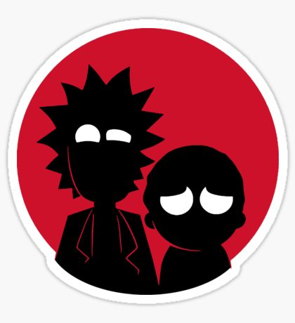
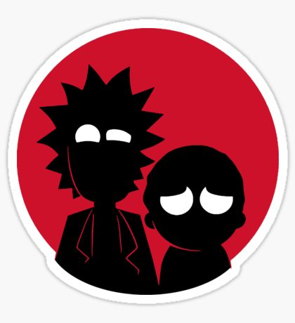
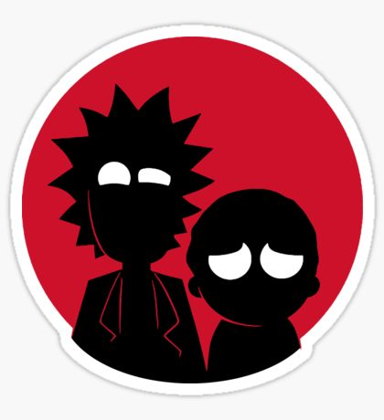

Vamos a empezar a probar las fuentes con la más bonita de todas.
Continuamos con la fuente característica de Charming,Califorma. WELCOME TO SAMCRO!
Seguimos, ahora probando un poquito los caracteres especiales.
En la entrega anterior hemos podido practicar mucho con < y >.
Ahora, vamos a variar un poco, jugando al póker:
Jugador 1: 10 ♠ 10 ♣ 10 ♥ 9 ♦ 7 ♣
Jugador 2: A ♠ A ♣ 6 ♣ 6 ♥ 7 ♠
Terminamos con la más rapida de todas!!!
